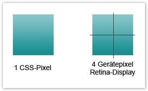

<!doctype html>
<html lang="en">
    <head>
        <meta charset="utf-8">

        <title>Responsive, WTF! - Make flexible websites</title>

        <meta name="description" content="A framework for easily creating beautiful presentations using HTML">
        <meta name="author" content="Hakim El Hattab">

        <meta name="apple-mobile-web-app-capable" content="yes" />
        <meta name="apple-mobile-web-app-status-bar-style" content="black-translucent" />

        <link rel="stylesheet" href="css/reveal.min.css">
        <link rel="stylesheet" href="css/theme/default.css" id="theme">

        <!-- For syntax highlighting -->
        <link rel="stylesheet" href="lib/css/zenburn.css">

        <!-- If the query includes 'print-pdf', use the PDF print sheet -->
        <script>
            document.write( '<link rel="stylesheet" href="css/print/' + ( window.location.search.match( /print-pdf/gi ) ? 'pdf' : 'paper' ) + '.css" type="text/css" media="print">' );
        </script>

        <!--[if lt IE 9]>
        <script src="lib/js/html5shiv.js"></script>
        <![endif]-->
    </head>

    <body>

        <div class="reveal">

            <!-- Any section element inside of this container is displayed as a slide -->
            <div class="slides">
                <section>
                    <section>
                        <h1>Responsive, WTF!</h1>
                        <p>Make flexible websites</p>
                    </section>
                    <section>
                        <h2>Eine Website für alle Geräte</h2>
                        <p>
                            Media Queries erlauben unterschiedliche Layouts je nach verfügbarem Platz im Browserfenster und
                            ermöglichen damit Responsive Webdesign.
                        </p>
                        <br>
                        <strong>Unterstützung</strong>
                        <p>
                            Aktuelle Versionen von Firefox, Safari, Chrome, Opera und IE ab Version 9.<br>
                            Ältere Browser: <a href="https://github.com/scottjehl/Respond">respond.js</a> oder <a href="http://html5boilerplate.com/">HTML5 Boilerplate</a> 
                        </p>
                    </section>
                    <section>
                        <h2>Schritt für Schritt</h2>
                        <br><br>
                        <strong>Für welche Auflösung soll optimiert werden?</strong>
                        <p>Als Standard optimieren wir hier für iPhone, iPad und Monitor</p>
                    </section>
                    <section>
                        <h2>Schritt für Schritt</h2>
                        <br><br>
                        <strong>Breakpoints</strong>
                        <p>
                            Soll das Layout sich flüssig (Prozentwerte) oder anhand fester Breakpoints 
                            (Pixelwerte) verändern?
                        </p>
                    </section>
                    <section>
                        <h2>Schritt für Schritt</h2>
                        <br><br>
                        <strong>Mobile First / Desktop First</strong>
                        <p>
                            Art der Umsetzung.<br>
                            Mobile First: Die kleinste Version wird zuerst umgesetzt. Vorteil: geringes Datenvolumen.
                            <br><br>
                            Desktop First: Die größte Version gilt als Default. Vorteil: Wenn die Seite im IE < 9 ohne JS funktionieren soll.
                        </p>
                    </section>
                </section>
                <section>
                    <section>
                        <h2>Auflösungen?!</h2>
                        <p>
                            iPhone 3G/3GS: 320 x 480
                            <br>
                            iPod Touch: 320 x 480
                        </p>
                        <p>
                            <br>
                            iPhone 4/4S: 320 x 480<br>
                            // <a href="http://confluence.denkwerk.int/display/DWTECHNIK/Responsive+and+mobile+Webdesign#ResponsiveandmobileWebdesign-DasRetina-Display">Retina-Display</a> = 640 x 960
                        </p>
                        <p>
                            <br>
                            iPhone 5: 568 x 320<br>
                            // <a href="http://confluence.denkwerk.int/display/DWTECHNIK/Responsive+and+mobile+Webdesign#ResponsiveandmobileWebdesign-DasRetina-Display">Retina-Display</a> = 1136 x 640 Pixel
                        </p>
                        <br><br>
                        <a href="http://confluence.denkwerk.int/display/DWTECHNIK/Responsive+and+mobile+Webdesign#ResponsiveandmobileWebdesign-G%C3%A4ngigeGer%C3%A4teaufl%C3%B6sungeninpx%C2%A0">Liste Geräteauflösungen</a>
                    </section>
                    <section>
                        <h2>Standard Media Query</h2>
                        <p>1) screen.css für allgemeine Angaben.</p>
                        <pre><code class="javascript" contenteditable="">&lt;link rel="stylesheet" type="text/css" href="css/screen.css" media="screen"&gt;</code></pre>

                        <p>2) für z.B. iPhone Portrait</p>
                        <pre><code class="javascript" contenteditable="">&lt;link rel="stylesheet" type="text/css" href="css/320.css"<br> media="screen and (max-width: 479px)"&gt;</code></pre>

                        <p>3) für z.B. Android Portrait, iPhone Landscape</p>
                        <pre><code class="javascript" contenteditable="">&lt;link rel="stylesheet" type="text/css" href="css/480.css"<br> media="screen and (min-width: 480px) and (max-width: 767px)"&gt;</code></pre>

                        <p>4) für z.B. iPad Portrait (768px), Android Landscape (800px)</p>
                        <pre><code class="javascript" contenteditable="">&lt;link rel="stylesheet" type="text/css" href="css/800.css"<br> media="screen and (min-width: 768px) and (max-width: 999px)"&gt;</code></pre>

                        <p>5) für große Auflösungen (z.B. dem Standard 1024 x 768, iPad Landscape).</p>
                        <pre><code class="javascript" contenteditable="">&lt;link rel="stylesheet" type="text/css" href="css/1024.css"<br> media="screen and (min-width: 1000px) and (max-width: 1179px)"&gt;</code></pre>

                        <p>6) für sehr große Auflösungen (Desktop)</p>
                        <pre><code class="javascript" contenteditable="">&lt;link rel="stylesheet" type="text/css" href="css/1280.css"<br> media="screen and (min-width: 1180px)"&gt;</code></pre>
                    </section>
                    <section>
                        <h2>Retina-Display</h2>
                        Auf Retina-Displays entspricht 1 CSS-Pixel 4 Gerätepixel. 
                        Sinn = schärfere Grafiken und Bilder
                        <br>
                        
                        <br><br>
                        Problem 
                        <br>
                        Bilder müssen für die vierfache Größe aufbereitet werden. 
                        Statt z.B. 10 x 10px wären dies 20 x 20px und sie werden 
                        nur bei folgendem Media Query geladen.
                        <br><br>
                        @media only screen and (-webkit-min-device-pixel-ratio : 2) {...}
                    </section>
                    <section>
                        <h2>Zoom bei Devices</h2>
                        <p>Mobile Devices skalieren den Content selbstständig. Um dies zu kontrollieren gibt es den Meta-Tag:</p>

                        <strong>Zoom durch den User möglich:</strong>
                        <pre><code class="javascript" contenteditable="">&lt;meta content="width=device-width, initial-scale=1.0, maximum-scale=1.5" name="viewport"&gt;</code></pre>

                        <strong>Kein Zoom möglich:</strong>
                        <pre><code class="javascript" contenteditable="">&lt;meta content="width=device-width, initial-scale=1.0, maximum-scale=1.0" name="viewport"&gt;</code></pre>
                    </section>
                </section>
            </div>

        </div>

        <script src="lib/js/head.min.js"></script>
        <script src="js/reveal.min.js"></script>

        <script>

            // Full list of configuration options available here:
            // https://github.com/hakimel/reveal.js#configuration
            Reveal.initialize({
                controls: true,
                progress: true,
                history: true,
                center: true,

                theme: Reveal.getQueryHash().theme, // available themes are in /css/theme
                transition: Reveal.getQueryHash().transition || 'default', // default/cube/page/concave/zoom/linear/none

                // Optional libraries used to extend on reveal.js
                dependencies: [
                    { src: 'lib/js/classList.js', condition: function() { return !document.body.classList; } },
                    { src: 'plugin/markdown/showdown.js', condition: function() { return !!document.querySelector( '[data-markdown]' ); } },
                    { src: 'plugin/markdown/markdown.js', condition: function() { return !!document.querySelector( '[data-markdown]' ); } },
                    { src: 'plugin/highlight/highlight.js', async: true, callback: function() { hljs.initHighlightingOnLoad(); } },
                    { src: 'plugin/zoom-js/zoom.js', async: true, condition: function() { return !!document.body.classList; } },
                    { src: 'plugin/notes/notes.js', async: true, condition: function() { return !!document.body.classList; } }
                    // { src: 'plugin/remotes/remotes.js', async: true, condition: function() { return !!document.body.classList; } }
                ]
            });

        </script>

    </body>
</html>
